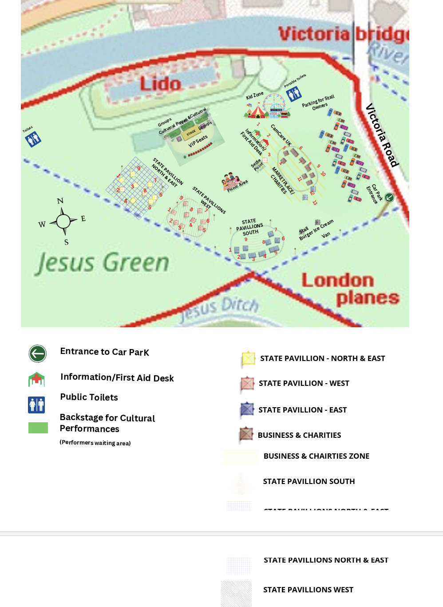

Event site map
The festival layout across Jesus Green — main stage, state pavilions, food bazaar, India bazaar, sponsor stalls, parking and facilities. Tap the map to open it full-size.

By train
Cambridge railway station is roughly a 25–30 minute walk, or a short bus or taxi ride, from Jesus Green. Frequent services run from London (King's Cross / Liverpool Street) and across the region.
By bus
Central Cambridge is well served by bus, with stops a short walk from the green. Drummer Street bus station is around 10 minutes away on foot.
By bike
Cambridge is one of the UK's most cycle-friendly cities. There is plenty of cycle parking around the edges of the green and along Midsummer Common.
By car & parking
City-centre parking is very limited. The easiest option is to use one of Cambridge's Park & Ride sites on the edge of the city and take the bus in. Please plan ahead, as roads are busy at weekends.